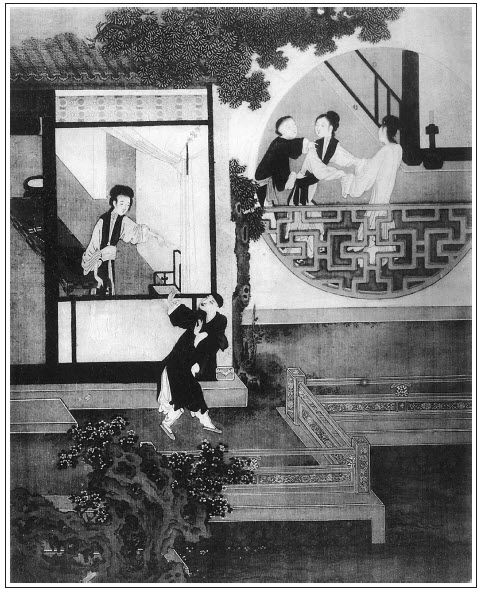

張回此回方寫蕙蓮。夫寫一金蓮，已令觀者發指，乃偏又寫一似金蓮，特特犯手，卻無一相犯。而寫此一金蓮，必受制於彼金蓮者，見金蓮之惡已小試於蕙蓮一人。而金蓮恃寵，為惡之膽，又漸起於治蕙蓮之時。其後遂至陷死瓶兒母子，勾串敬濟，藥死西門，一縱而幾不可治者，皆小試於蕙蓮之日。西門入其套中，不能以理治之以明察之。惟有縱其為惡之性耳。吾故日：為金蓮寫肆惡之由，寫一武大死；為金蓮定爭寵之由，乃寫一蕙蓮死也。
寫蕙蓮，為瓶兒受害作一小小前車。其意已批前《讀法》內，不另栽。
上半寫蕙蓮，下半卻是寫春梅。夫於孫雪娥吃打後，雖略見一斑，實未嘗正描春梅一筆。今日金、瓶已同入花園，蕙蓮又出，正好一頓『住蕙蓮，騰出筆來放手一寫春梅也。
寫春梅，必用罵李銘襯出者，何也？夫寫春梅之心高志大氣傲，已隨處寫出，今必欲特特寫出，則必用一因，起一事方好。夫家中起因於小廝媳婦丫鬟中，則小春梅身份聲價。若於敬濟，則未描其骨格，先寫其墮落矣，是用借李銘一襯，則春梅矜尚自許，圭角崖岸，誇大負氣，數語皆見。而於前嬌兒陷金蓮，桂姐要剪髮一恨，輕輕提出。見得蓄恨已久，無緣報復，今乘桂姐破綻敗露，而李錦又適逢其會，遂使棄千年不報之恨，一旦機緣湊巧，此時不報，更待何時？遂一發盡情，不遺餘力也。寫怨恨之於人如此。作者固明明一線穿來，而看者止見其寫春梅一面，不知其又暗結金蓮一面，而後文嬌兒於西門死後盜財付李銘手，又必用春梅看見可想。
詞曰：
今宵何夕？月痕初照。等閒間一見猶難，平白地兩邊湊巧。向燈前見他，向燈前見他，一似夢中來到。何曾心料，他怕人瞧。驚臉兒紅還白，張夾容光照人。熱心兒火樣燒。
──右調《桂枝香》

話說次日，有吳大妗子、楊姑娘、潘姥姥眾堂客，因來與孟玉樓做生日，月娘都留在後廳飲酒，其中惹出一件事兒。那來旺兒，因他媳婦癆病死了，月娘新又與他娶了一房媳婦，乃是賣棺材宋仁的女兒，也名喚金蓮。繡旁便妙。當先賣在蔡通判家房裡使喚，後因壞了事出來，嫁與廚役蔣聰為妻。這蔣聰常在西門慶家答應，來旺兒早晚到蔣聰家叫他去，看見這個老婆，兩個吃酒刮言，就把這個老婆刮上了。一日，不想這蔣聰因和一般廚役分財不均，酒醉廝打，動起刀杖來，把蔣聰戳死在地，那人便越牆逃走了。老婆央來旺兒對西門慶說了，替他拿帖兒縣裡和縣丞說，差人捉住正犯，問成死罪，抵了蔣聰命。繡眉蕙蓮肯為蔣聰報仇，雖淫亦當正論。後來，來旺兒哄月娘，只說是小人家媳婦兒，會做針指。月娘使了五兩銀子，兩套衣服，四疋青紅布，並簪環之類，娶與他為妻。月娘因他叫金蓮，不好稱呼，遂改名為蕙蓮。這個婦人小金蓮兩歲，今年二十四歲，生的白淨，身子兒不肥不瘦，模樣兒不短不長，比金蓮腳還小些兒。張夾後來居上。性明敏，善機變，會妝飾，繡旁要緊。就是嘲漢子的班頭，壞家風的領袖。若說他底的本事，他也曾：
斜倚門兒立，人來側目隨。
托腮並咬指，無故整衣裳。
坐立頻搖腿，無人曲唱低。
開窗推戶牖，停針不語時。繡旁恐不至此。
未言先欲笑，必定與人私。
初來時，同眾媳婦上灶，還沒甚麼妝飾。後過了個月有餘，因看見玉樓、金蓮打扮，他便把䯼髻墊的高高的，頭髮梳的虛籠籠的，水鬢描的長長的，繡眉雖非婢學夫人，卻亦漸入佳境。在上邊遞茶遞水，被西門慶睃在眼裡。繡旁不放過。一日，設了條計策，教來旺兒押了五百兩銀子，往杭州替蔡太師製造慶賀生辰錦繡蟒衣，張夾早為「加官」伏線。文字每不肯作一筆用。妙絕，妙絕。並家中穿的四季衣服，往回也有半年期程。張夾記明。從十一月半頭，搭在旱路車上起身去了。西門慶安心早晚要調戲他這老婆，不期到此正值孟玉樓生日，月娘和眾堂客在後廳吃酒。西門慶那日沒往那去，月娘分咐玉簫：張旁提出玉簫。「房中另放桌兒，打發酒菜你爹吃。」西門慶因打簾內看見蕙蓮身上穿著紅綢對襟襖、紫絹裙子，在席上斟酒，問玉簫道：「那個是新娶的來旺兒的媳婦子蕙蓮？怎的紅襖配著紫裙子，怪模怪樣？繡眉見怪不怪方妙，一見怪，則著鬼矣。到明日對你娘說，另與他一條別的顏色裙子配著穿。」玉簫道：「這紫裙子，還是問我借的。」說著就罷了。
須臾，過了玉樓生日。一日，月娘往對門喬大戶家吃酒去了。約後晌時分，西門慶從外來家，已有酒了，走到儀門首，這蕙蓮正往外走，兩個撞個滿懷。張夾又與瓶兒對照。西門慶便一手摟過脖子來，就親了個嘴，口中喃喃吶吶說道：「我的兒，你若依了我，頭面衣服，隨你揀著用。」繡眉純以利動之，已落第二義。張夾純以財動之，便非金、瓶一類矣。那婦人一聲兒沒言語，推開西門慶手，一直往前走了。西門慶歸到上房，叫玉簫送了一疋藍緞子到他屋裡，如此這般對他說：「爹昨日見你穿著紅襖，配著紫裙子，怪模怪樣的不好看，才拿了這疋緞子，使我送與你，教你做裙子穿。」這蕙蓮開看，卻是一疋翠藍兼四季團花喜相逢緞子。說道：「我做出來，娘見了問怎了？」玉簫道：「爹到明日還對娘說，你放心。爹說來，你若依了這件事，隨你要甚麼，爹與你買。今日趕娘不在家，要和你會會兒，你心下如何？」那婦人聽了，微笑不言，張夾又另寫一淫婦樣。因問：「爹多咱時分來？我好在屋裡伺候。」玉簫道：「爹說小廝們看著，不好進你屋裡來的。教你悄悄往山子底下洞兒裡，那裡無人，堪可一會。」老婆道：「只怕五娘、六娘知道了，不好意思的。」玉簫道：「三娘和五娘都在六娘屋裡下棋，你去不妨事。」當下約會已定，玉簫走來回西門慶說話。兩個都往山子底下成事，玉簫在門首與他觀風。正是：
解帶色已戰，觸手心愈忙。繡旁未必。
那識羅裙內，銷魂別有香。
不想金蓮、玉樓都在李瓶兒房裡下棋，只見小鸞來請玉樓，說：「爹來家了。」三人就散了，玉樓回後邊去了。金蓮走到房中，勻了臉，繡旁不漏。亦往後邊來。走入儀門，張夾儀門。只見小玉立在上房門首。金蓮問：「你爹在屋裡？」小玉搖手兒，往前指。繡旁畫。金蓮就知其意，走到前邊山子角門首，張夾角門。只見玉簫攔著門。金蓮只猜玉簫和西門慶在此私狎，便頂進去。玉簫慌了，說道：「五娘休進去，爹在裡頭有勾當哩！」金蓮罵道：「怪狗肉，我又怕你爹了？」不由分說，進入花園裡來，各處尋了一遍。走到藏春塢山子洞兒裡，只見他兩個人在裡面才了事。婦人聽見有人來，連忙繫上裙子往外走，張夾情事如畫。看見金蓮，把臉通紅了。金蓮問道：「賊臭肉，你在這裡做甚麼？」蕙蓮道：「我來叫畫童兒。」說著，一溜煙走了。金蓮進來，看見西門慶在裡邊繫褲子，罵道：「賊沒廉恥的貨，你和奴才淫婦大白日裡在這裡，端的幹這勾當兒，剛才我打與淫婦兩個耳刮子才好，不想他往外走了。原來你就是畫童兒，他來尋你！你與我實說，和這淫婦偷了幾遭？若不實說，等住回大姐姐來家，看我說不說。我若不把奴才淫婦臉打的脹豬，也不算。俺們閒的聲喚在這裡，你也來插上一把子。繡眉氣妒語，妙在說得帶幾分無恥，以見為淫也，非為情也。張夾總是為此物起妒心。老娘眼裡卻放不過！」西門慶笑道：「怪小淫婦兒，悄悄兒罷，休要嚷的人知道。我實對你說，如此這般，連今日才第一遭。」金蓮道：「一遭二遭，我不信。你既要這奴才淫婦，張夾截斷讀，言即要如此，不可瞞我也。兩個瞞神謊鬼弄刺子兒，我打聽出來，休怪了，我卻和你們答話！」那西門慶笑的出去了。
金蓮到後邊，聽見眾丫頭們說：「爹來家，使玉簫手巾裹著一疋藍緞子往前邊去，不知與誰。」金蓮就知是與蕙蓮的，對玉樓也不題起此事。這婦人每日在那邊，或替他造湯飯，或替他做針指鞋腳，或跟著李瓶兒下棋，常賊乖趨附金蓮。張夾金蓮不言，正為此也。被西門慶撞在一處，無人，教他兩個苟合，圖漢子喜歡。張夾尚未嘗甕頭醋味也。蕙蓮自從和西門慶私通之後，背地與他衣服、首飾、香茶之類不算，只銀子成兩家帶在身邊，在門首買花翠胭脂，漸漸顯露，打扮的比往日不同。張夾寫蕙蓮身份。西門慶又對月娘說，他做的好湯水，不教他上大灶，只教他和玉簫兩個，在月娘房裡後邊小灶上，專頓茶水，整理菜蔬，打發月娘房裡吃飯，與月娘做針指，不必細說。看官聽說：凡家主，切不可與奴僕並家人之婦苟且私狎，久後必紊亂上下，竊弄奸欺，敗壞風俗，殆不可制。張夾作者砭人處，文字一頓。
一日，臘月初八日，西門慶早起，約下應伯爵，與大街坊尚推官家送殯。叫小廝馬也備下兩疋，等伯爵白不見到，一面李銘來了。西門慶就在大廳上圍爐坐的，教春梅、玉簫、蘭香、迎春一般兒四個，都打扮出來，看著李銘指撥、教演他彈唱。女婿陳敬濟，在旁陪著說話。張夾又寫西門慶托大之失。正唱《三弄梅花》，還未了，只見伯爵來，應保夾著氈包進門。那春梅等四個就要往後走，被西門慶喝住，說道：「左右只是你應二爹，都來見見罷，躲怎的！」張夾又托大，為後文翟管家作引。與伯爵兩個相見作揖，才待坐下，西門慶令四個過來：「與應二爹磕頭。」那春梅等朝上磕頭下去，慌的伯爵還喏不迭，誇道：「誰似哥有福，出落的恁四個好姐姐，水蔥兒的一般，一個賽一個。卻怎生好？你應二爹今日素手，促忙促急，沒曾帶的甚麼在身邊，改日送胭脂錢來罷。」春梅等四人，見了禮去了。陳敬濟向前作揖，一同坐下。西門慶道：「你如何今日這咱才來？」應伯爵道：「不好告訴你的。大小女病了一向，張旁「大小女」三字，早為後春梅不娶他小女作伏。總之，此回為春梅作傳，固應使後事一現，而敬濟必在旁也。與前大丫頭、大家人一樣章法。近日才好些。房下記掛著，今日接了他家來散心住兩日。亂著，旋叫應保叫了轎子，買了些東西在家，我才來了。」繡眉如在，是伯爵家事。
西門慶道：「教我只顧等著你。咱吃了粥，好去了。」隨即吩咐後邊看粥來吃。只見李銘，見伯爵打了半跪。伯爵道：「李日新，一向不見你。」李銘道：「小的有。連日小的在北邊徐公公那裡答應來。」說著，小廝放桌兒，拿粥來吃。十樣小菜兒，四碗頓爛嗄飯，銀鑲甌兒盛著粳米投各樣榛松果品白糖粥兒。西門慶陪應伯爵、陳敬濟吃了。就拿小銀鍾篩金華酒，每人吃了三杯。壺裡還剩下上半壺酒，吩咐畫童兒：「連桌兒抬去廂房內，與李銘吃。」繡眉偏在絕沒要緊弄巧，一味文心細冷。就穿衣服起身，同伯爵並馬而行，與尚推官送殯去了。只落下李銘在西廂房，吃畢酒飯。
玉簫和蘭香眾人，打發西門慶出了門，在廂房內廝亂，頑成一塊。繡旁必至之情。一回，都往對過東廂房西門大姐房裡摑混去了，張夾襯出春梅。止落下春梅一個，和李銘在這邊教演琵琶。李銘也有酒了。春梅袖口子寬，把手兜住了。李銘把他手拿起，略按重了些。被春梅怪叫起來，繡眉寫得似有意，似無意，以見半是春梅之性燥也。罵道：「好賊忘八！張夾忘八，一。你怎的撚我的手，調戲我？賊少死的忘八，張夾忘八，二。你還不知道我是誰哩！繡旁自負不卑。一日好酒好肉，越發養活的你這忘八張夾忘八，三。聖靈兒出來了，繡旁罵得妙。平白撚我的手來了。賊忘八，張夾忘八，四。你錯下這個鍬撅了。你問聲兒去，我手裡你來弄鬼！爹來家等我說了，把你這賊忘八，張夾忘八，五。一條棍攆的離門離戶！沒你這忘八，張夾忘八，六。學不成唱了？愁本司三院尋不出忘八來？張夾忘八，七。撅臭了你這忘八了！」張夾忘八，八。如聞其聲，如見其人。被他千忘八，萬忘八，張夾又總二忘八。罵的李銘拿著衣服，往外走不迭。正是：
兩手劈開生死路，翻身跳出是非門。
當下春梅氣狠狠，直罵進後邊來。金蓮正和孟玉樓、李瓶兒並宋蕙蓮在房裡下棋，只聽見春梅從外罵將來。金蓮便問道：「賊小肉兒，你罵誰哩，誰惹你來？」春梅道：「情知是誰，叵耐李銘那忘八！張夾忘八，九。爹臨去，好意吩咐小廝，留下一桌菜並粳米粥兒與他吃。也有玉簫他們，你推我，我打你，頑成一塊，對著忘八，張夾忘八，十。呲牙露嘴的，狂的有些褶兒也怎的。張夾活春梅。頑了一回，都往大姐那邊去了。忘八見無人，張夾忘八，十一。盡力把我手上撚一下。吃的醉醉的，看著我嗤嗤呆笑。繡旁寫得出。那忘八見張夾忘八，十二。我吆喝罵起來，他就夾著衣裳往外走了。剛才打與賊忘八張夾忘八，十三。兩個耳刮子才好！賊忘八，張夾忘八，十四。你也看個人兒行事，我不是那不三不四的邪皮行貨，教你這個忘八張夾忘八，十五。在我手裡弄鬼。我把忘八張夾忘八，十六。臉打綠了！」張夾三字奇絕。金蓮道：「怪小肉兒，學不學沒要緊，把臉氣的黃黃的，等爹來家說了，把賊忘八張夾忘八，十七。攆了去就是了。那裡緊等著供唱撰錢哩，繡眉金蓮愛惜春梅至矣，故後感之不忘。怎的教忘八張夾忘八，十八。調戲我這丫頭！我知道賊忘八張夾忘八，十九。業罐子滿了。」春梅道：「他就倒運，著量二娘的兄弟。繡眉偏照映得到。那怕他！二娘莫不挾仇打我五棍兒？」張夾罵李銘，因此點出。藏針伏線，一至於此。宋蕙蓮道：「論起來，你是樂工，在人家教唱，也不該調戲良人家女子！照顧你一個錢，也是養身父母，休說一日三茶六飯兒扶侍著。」金蓮道：「扶侍著，臨了還要錢兒去了。按月兒，一個月與他五兩銀子。賊忘八，錯上了墳。你問聲家裡這些小廝們，那個敢望著他呲牙笑一笑兒，吊個嘴兒？遇喜歡罵兩句；張夾罵李銘，因此點出。藏針伏線，一至於此。若不歡喜，拉倒他主子跟前就是打。賊忘八，張夾忘八二十。造化低，你惹他生薑，你還沒曾經著他辣手！」繡眉一味為春梅作聲價。因向春梅道：「沒見你，你爹去了，你進來便罷了，平白只顧和他那房裡做甚麼？卻教那忘八張夾忘八二十一。調戲你！」張夾總是愛極。春梅道：「都是玉簫和他們，只顧還笑成一塊，不肯進來。」玉樓道：「他三個如今還在那屋裡？」春梅道：「都往大姐房裡去了。」玉樓道：「等我瞧瞧去。」那玉樓起身去了。良久，李瓶兒亦回房，使繡春叫迎春去。至晚，西門慶來家，金蓮一五一十告訴西門慶。西門慶吩咐來興兒，今後休放進李銘來走動。自此斷了路兒，不敢上門。正是：
習教歌妓逞家豪，每日閒庭弄錦槽。
不是朱顏容易變，何由聲價競天高。